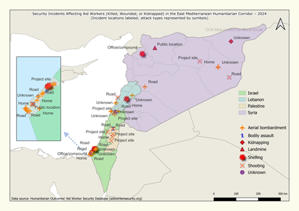
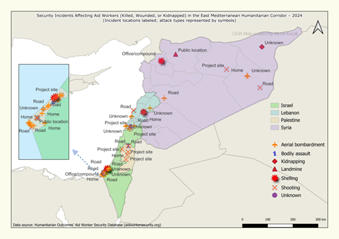

Security Aid Workers Dashboard and Map Visualization
 

Tools: Power BI, DAX, M, Python, GeoPy, Pandas, QGIS, Mapshaper
This project aims to enhance the safety of humanitarian aid workers by analyzing security incidents in which they were killed, wounded, or kidnapped from 1997 to 2024. Deliverables include a two-page interactive Power BI dashboard and a complementary QGIS map visualization (PNG). These tools provide actionable insights into incident patterns, victim demographics, organizational involvement, and geographic hotspots. By integrating advanced data modeling, geospatial analysis, and dynamic visualizations, the project empowers security managers, analysts, and humanitarian organizations to make informed strategic and operational decisions in high-risk areas.